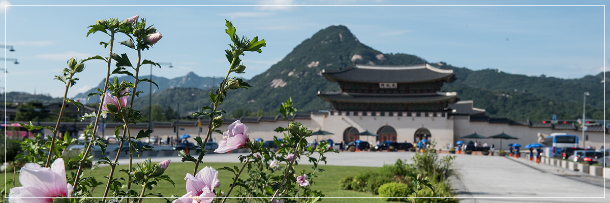

- >
- 광장소개 >
- 광장소개
광장소개

미래의 광화문광장은
새로운 시민중심 대한민국 대표공간입니다
광화문광장 정보
-
- 위치
-
광화문에서 세종로사거리와 청계광장으로
이어지는 세종로 중앙
-
- 조성시기
-
2008년 5월 27일 착공되었으며
2009년 7월 말에 완공
-
- 규모
-
18,840㎡
(폭 34m, 길이 557m)
-
- 개방시간
-
도심 열린 광장으로
연중 24시간 상시 개방
광화문광장 시설 소개
세종문화회관 앞에는 창의와 실용의 정신으로 문화강국을 이루자는 뜻으로 높이 6.2m, 폭4.3m에 4.2m의 기단(基壇)위의 무게20톤 규모의 세종대왕 동상이 세워졌고 세종이야기 등 상설전시장이 마련되어 있습니다. 세종문화회관과 이순신장군동상 사이의 '시민들이 참여하는 광장 중앙에는 미술, 조형미술 등 다양한 전시공간으로 이용되고 해치마당에는 이용객을 위한 아리수 샘터, 안내소, 기념품점 등 편의시설과 전시장, 엘리베이터, 만남과 약속의 장소 등 문화갤러리 등이 들어서 있습니다.
이순신 장군동상은 세종로의 상징이자 도시경관축의 중심지로서 상징성을 나타내며 샤프분수(동상좌우), 바닥분수(동상전면), 등 수경시설이 설치되어있습니다. 세종로사거리와 청계광장 사이의 '청계천 연결부'는 청계천과 경복궁을 연결하는 보행 네트워크의 연결 축으로 조성되었습니다.
이밖에 지하철 경복궁역과 광화문역에서 발생하는 지하 용출수를 청계천으로 흘려보내는 '역사물길(水路)이 조성되었고, 이순신장군동상 뒤편에 지상과 광화문역을 연결하여 시민들이 쉽게 광장을 오갈 수 있도록 '해치마당'이 조성되었습니다. 상시광장 외에는 왕복 10차선의 차도부와 보도부로 이용하다가 행사 규모에 맞게 교통통제를 실시하여 중규모 행사 때는 너비 67m, 대규모 행사 때는 너비 100m까지 넓어졌습니다.
바닥분수 운영기간 및 시간 안내
| 운영기간 | 운영시간 | 가동방법 |
|---|---|---|
| 4월~5월, 9월~10월 | 10:00~19:50 | 50분 가동, 10분 휴식(반복) |
| 6월~8월 | 10:00~20:50 |
※현장상황, 기상변화 등을 고려 탄력 운영 [우천, 강풍(5m/s 이상)시 가동중단]
- 제공부서
- 광화문광장추진단
- 문의
- 02-2133-7713
- 작성일
- 2020.04.01